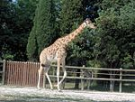
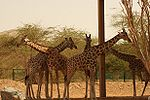
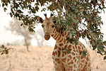
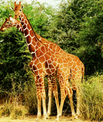
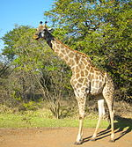
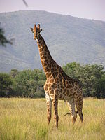
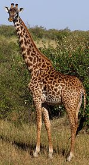
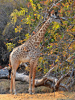

The name "giraffe" has its earliest known origins in the Arabic word zarāfah (زرافة),[2] perhaps borrowed from the animal's Somali name geri.[3] The Arab name is translated as "fast-walker".[4] There were several Middle English spellings, such as jarraf, ziraph, and gerfauntz.[2] The Italian form giraffa arose in the 1590s.[2] The modern English form developed around 1600 from the French girafe.[2] "Camelopard" is an archaic English name for the giraffe deriving from the Ancient Greek for camel and leopard, referring to its camel-like shape and its leopard-like colouring.[5][6]
Living giraffes were originally classified as one species by Carl Linnaeus in 1758. He gave it the binomial name Cervus camelopardalis. Morten Thrane Brünnich classified the genus Giraffa in 1772.[7] The species name camelopardalis is from Latin.[8]
The giraffe belongs to the suborder Ruminantia. Many ruminants have been described from the mid-Eocene in Central Asia, Southeast Asia, and North America. The earliest ruminants date back to about 50 million years ago. The Rumanantia arose from early artiodactyls, which experienced adaptive radiation in the middle Eocene period that led to adaptations related to herbivory. The oldest known artiodactyl lived in Holarctic of Pangea, which then occupied regions in North America, Europe, and Asia around 60–55 million years ago in the early Eucene.[11] The ecological conditions during this period may have helped them to disperse fast. The giraffe is one of only two living genera of the family Giraffidae, the other being the okapi. The family was once much more extensive, with over 10 fossil genera described. Their closest known relatives are the extinct deer-like climacocerids. They, together with the family Antilocapridae (whose only extant species is the pronghorn), belong to the superfamily Giraffoidea. These animals may have evolved from the extinct family Palaeomerycidae which might also have been the ancestor of deer.[12]
The elongation of the neck appears to have started early in the giraffe lineage. Comparisons between giraffes and their ancient relatives suggest that vertebrae close to the skull lengthened earlier, followed by lengthening of vertebrae further down.[13] One early giraffid ancestor was Canthumeryx which has been dated variously to have lived 25–20 million years ago (mya), 17–15 mya or 18–14.3 mya and whose deposits have been found in Libya. This animal was medium-sized, slender and antelope-like. Giraffokeryx appeared 15 mya in the Indian subcontinent and resembled an okapi or a small giraffe, and had a longer neck and similar ossicones.[12] Giraffokeryx may have shared a clade with more massively built giraffids like Sivatherium and Bramatherium.[13]
Giraffids like Palaeotragus, Shansitherium and Samotherium appeared 14 mya and lived throughout Africa and Eurasia. These animals had bare ossicones and small cranial sinuses and were longer with broader skulls.[12][13] Paleotragus resembled the okapi and may have been its ancestor.[12] Others find that the okapi lineage diverged earlier, before Giraffokeryx.[13] Samotherium was a particularly important transitional fossil in the giraffe lineage as its cervical vertebrae was intermediate in length and structure between a modern giraffe and an okapi, and was more vertical than the okapi's.[14] Bohlinia, which first appeared in southeastern Europe and lived 9–7 mya was likely a direct ancestor of the giraffe. Bohlinia closely resembled modern giraffes, having a long neck and legs and similar ossicones and dentition.[12]
Bohlinia entered China and northern India in response to climate change. From there, the genus Giraffa evolved and, around 7 mya, entered Africa.[15] Further climate changes caused the extinction of the Asian giraffes, while the African giraffes survived and radiated into several new species. Living giraffes appear to have arisen around 1 mya in eastern Africa during the Pleistocene.[12] Some biologists suggest the modern giraffes descended from G. jumae;[16] others find G. gracilis a more likely candidate.[12] G. jumae was larger and more heavily built while G. gracilis was smaller and more lightly built. The main driver for the evolution of the giraffes is believed to have been the changes from extensive forests to more open habitats, which began 8 mya.[12] During this time, tropical plants disappeared and were replaced by arid C4 plants, and a dry savannah emerged across eastern and northern Africa and western India.[17][18] Some researchers have hypothesised that this new habitat coupled with a different diet, including acacia species, may have exposed giraffe ancestors to toxins that caused higher mutation rates and a higher rate of evolution.[19] The coat patterns of modern giraffes may also have coincided with these habitat changes. Asian giraffes are hypothesised to have had more okapi-like colourations.[12]
In the early 19th century, Jean-Baptiste Lamarck believed the giraffe's long neck was an "acquired characteristic", developed as generations of ancestral giraffes strove to reach the leaves of tall trees.[20] This theory was eventually rejected, and scientists now believe the giraffe's neck arose through Darwinian natural selection—that ancestral giraffes with long necks thereby had a competitive feeding advantage (competing browsers hypothesis)[21] that better enabled them to survive and reproduce to pass on their genes.[20]
The giraffe genome is around 2.9 billion base pairs in length compared to the 3.3 billion base pairs of the okapi. Of the proteins in giraffe and okapi genes, 19.4% are identical. The two species are equally distantly related to cattle, suggesting the giraffe's unique characteristics are not because of faster evolution. The divergence of giraffe and okapi lineages dates to around 11.5 mya. A small group of regulatory genes in the giraffe appear to be responsible for the animal's stature and associated circulatory adaptations.[22]
The IUCN currently recognizes only one species of giraffe with nine subspecies.[24][25] In 2001, a two-species taxonomy was proposed.[26] A 2007 study on the genetics of Giraffa, suggested they were six species: the West African, Rothschild's, reticulated, Masai, Angolan, and South African giraffe.[23] The study deduced from genetic differences in nuclear and mitochondrial DNA (mtDNA) that giraffes from these populations are reproductively isolated and rarely interbreed, though no natural obstacles block their mutual access. This includes adjacent populations of Rothschild's, reticulated, and Masai giraffes. The Masai giraffe was also suggested to consist of possibly two species separated by the Rift Valley.[23]
Reticulated and Masai giraffes have the highest mtDNA diversity, which is consistent with giraffes originating in eastern Africa. Populations further north are more closely related to the former, while those to the south are more related to the latter. Giraffes appear to select mates of the same coat type, which are imprinted on them as calves.[23] The implications of these findings for the conservation of giraffes were summarised by David Brown, lead author of the study, who told BBC News: "Lumping all giraffes into one species obscures the reality that some kinds of giraffe are on the brink. Some of these populations number only a few hundred individuals and need immediate protection."[27]
A 2011 study using detailed analyses of the morphology of giraffes, and application of the phylogenetic species concept, described eight species of living giraffes.[28] The eight species are: G. angolensis, G.antiquorum, G. camelopardalis, G. giraffa, G. peralta, G. reticulata, G. thornicrofti, and G. tippelskirchi.
A 2016 study also concluded that living giraffes consist of multiple species.[29] The researchers suggested the existence of four species, which have not exchanged genetic information between each other for 1 million to 2 million years. Those four species are the northern giraffe (G. camelopardalis), southern giraffe (G. giraffa), reticulated giraffe (G. reticulata), and Masai giraffe (G. tippelskirchi).[29] Since then, a response to this publication has been published, highlighting seven problems in data interpretation, and concludes "the conclusions should not be accepted unconditionally".[30]
There are an estimated 90,000 individuals of Giraffa in the wild, with 1,144 currently in captivity.[29][31]
| One species taxonomy[25][24] | Four species taxonomy[29] | Eight species taxonomy[28 | ]Description | Image |
|---|---|---|---|---|
| Giraffe (G. camelopardalis)[25][24] | Northern giraffe (G. camelopardalis) | Kordofan giraffe (G. antiquorum)[32] | The Kordofan giraffe (G. c. antiquorum) has a distribution which includes southern Chad, the Central African Republic, northern Cameroon, and north-eastern DR Congo.[25] Populations in Cameroon were formerly included in G. c. peralta, but this was incorrect.[33] Compared to the Nubian giraffe, this subspecies has smaller and more irregular spotting patterns. Its spots may be found below the hocks and the insides of the legs. A median lump is present in males.[34]:51–52 Some 2,000 are believed to remain in the wild.[25] Considerable confusion has existed over the status of this species and G. c. peralta in zoos. In 2007, all alleged G. c. peralta in European zoos were shown to be, in fact, G. c. antiquorum.[33] With this correction, about 65 are kept in zoos.[31] The formerly recognised subspecies G. c. congoesis is now considered part of Kordofan species. |  |
| Nubian giraffe including Rothchild's giraffe (G. camelopardalis)[24] also known as Baringo giraffe or Ugandan giraffe | The Nubian giraffe (G. c. camelopardalis), is found in eastern South Sudan and south-western Ethiopia, in addition to Kenya and Uganda.[25] It has sharply defined chestnut-coloured spots surrounded by mostly white lines, while undersides lack spotting.[35] The median lump is particularly developed in the male.[34]:51 Around 2,150 are thought to remain in the wild, with another 1,500 individuals belonging to the Rothschild ecotype.[25] With the addition of Rothschild's giraffe to the Nubian subspecies, the Nubian giraffe is very common in captivity, although the original phenotype is rare- a group is kept at Al Ain Zoo in the United Arab Emirates.[36] In 2003, this group numbered 14.[37] The Rothschild's giraffe (G. c. rothschildi) may be an ecotype of G. camelopardalis. Its range includes parts of Uganda and Kenya.[25] Its presence in South Sudan is uncertain.[38] This giraffe has large dark patches that usually have complete margins, but may also have sharp edges. The dark spots may also have paler radiating lines or streaks within them. Spotting does not often reach below the hocks and almost never to the hooves. This ecotype may also develop five "horns".[34]:53 Around 1,500 individuals believed to remain in the wild,[25] and more than 450 are kept in zoos.[31] According to genetic analysis circa September 2016, it is conspecific with the Nubian giraffe (G. c. camelopardalis).[29] |
 | ||
| West African giraffe (G. peralta),[39][40] also known as Niger giraffe or Nigerian giraffe | The West African giraffe (G. c. peralta) is endemic to south-western Niger.[25] This animal has a lighter pelage than other subspecies,[41]:322 with red lobe-shaped blotches that reach below the hocks. The ossicones are more erect than in other subspecies and males have well-developed median lumps.[34]:52–53 It is the most endangered subspecies within Giraffa, with 400 individuals remaining in the wild.[25] Giraffes in Cameroon were formerly believed to belong to this species, but are actually G. c. antiquorum.[33] This error resulted in some confusion over its status in zoos, but in 2007, it was established that all "G. c. peralta" kept in European zoos actually are G. c. antiquorum. The same 2007 study found that The West African giraffe was more closely related to the Rothchild's giraffe than the Kordofan and its ancestor may have migrated from eastern to northern Africa and then to its current range with the development of the Sahara Desert. At its largest, Lake Chad may have acted as a barrier between West African and Kordofan giraffes during the Holocene (before 5000 BC).[33] |  | ||
| Reticulated Giraffe Somali Giraffe |
(G. reticulata),[42] also known as Somali giraffe | The reticulated giraffe (G. c. reticulata) is native to north-eastern Kenya, southern Ethiopia, and Somalia.[25] Its distinctive coat pattern consists of sharp-edged, reddish brown polygonal patches divided by a network of thin white lines. Spots may or may not extend below the hocks, and a median lump is present in males.[34]:53 An estimated 8,660 individuals remain in the wild,[25] and based on International Species Information System records, more than 450 are kept in zoos.[31] |  | |
| Southern Giraffe | Angolan giraffe (G. angolensis), also known as Namibian giraffe | The Angolan giraffe (G. c. angolensis) is found in northern Namibia, south-western Zambia, Botswana, and western Zimbabwe.[25] A 2009 genetic study on this subspecies suggested the northern Namib Desert and Etosha National Park populations form a separate subspecies.[43] This species has large brown blotches with edges that are either somewhat notched or have angular extensions. The spotting pattern extends throughout the legs but not the upper part of the face. The neck and rump patches tend to be fairly small. The species also has a white ear patch.[34]:51 An estimated 13,000 animals are estimated to remain in the wild;[25] and about 20 are kept in zoos.[31] |  | |
| South African giraffe (G. giraffa)[44] also known as Cape giraffe | The South African giraffe (G. c. giraffa) is found in northern South Africa, southern Botswana, southern Zimbabwe, and south-western Mozambique.[25] It has dark, somewhat rounded patches "with some fine projections" on a tawny background colour. The spots extend down the legs and get smaller. The median lump of males is less developed.[34]:52 A maximum of 31,500 are estimated to remain in the wild,[25] and around 45 are kept in zoos.[31] |  | ||
| Masai Giraffe | Masai giraffe (G. tippelskirchi),[45] also known as Kilimanjaro giraffe | The Masai giraffe (G. c. tippelskirchi) can be found in central and southern Kenya and in Tanzania.[25] It has distinctive, irregular, jagged, star-like blotches which extend to the hooves. A median lump is usually present in males.[34]:54[46] A total of 32,550 are thought to remain in the wild,[25] and about 100 are kept in zoos.[31] |  | |
| Thornicroft's giraffe("G. thornicrofti", after Harry Scott Thornicroft),[47] also known as Luangwa giraffe, or Rhodesian giraffe | The Thornicroft's giraffe (G. c. thornicrofti) is restricted to the Luangwa Valley in eastern Zambia.[25] The patches are notched and somewhat star-shaped, and may or may not extend across the legs. The median lump of males is underdeveloped.[34]:54 No more than 550 remain in the wild,[25] with none kept in zoos.[31] |  |